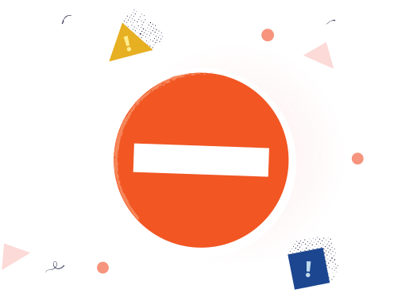

Warning: This URL is no longer available because it was created by a suspended account.
We recommend you close your browser window and notify the person who sent you the link.
Why was this link blocked?
The account used to create this link has been suspended for violations of our Acceptable Use Policy. Links created by suspended accounts are suspended as well.
Learn more about what Bitly does to keep you safe at the Bitly Trust Center.
If this is your link and believe your account has been suspended in error, submit an appeal via this this form.